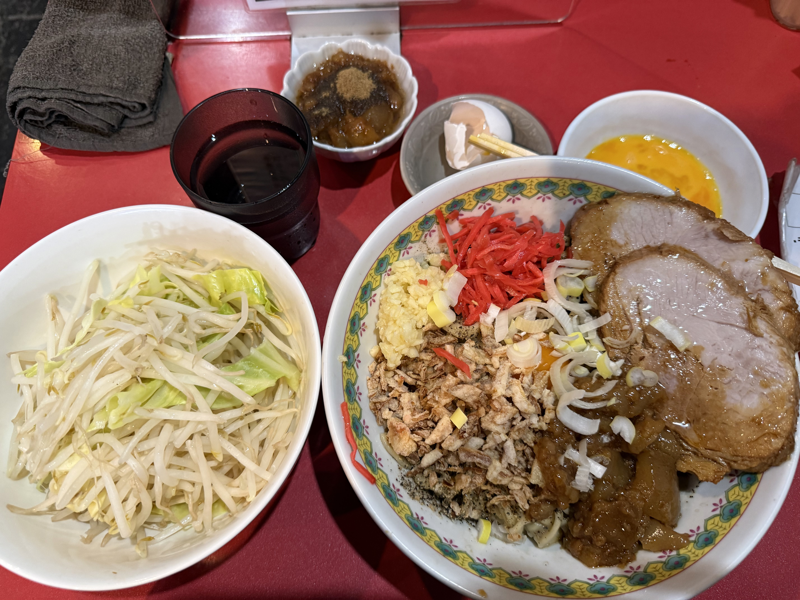
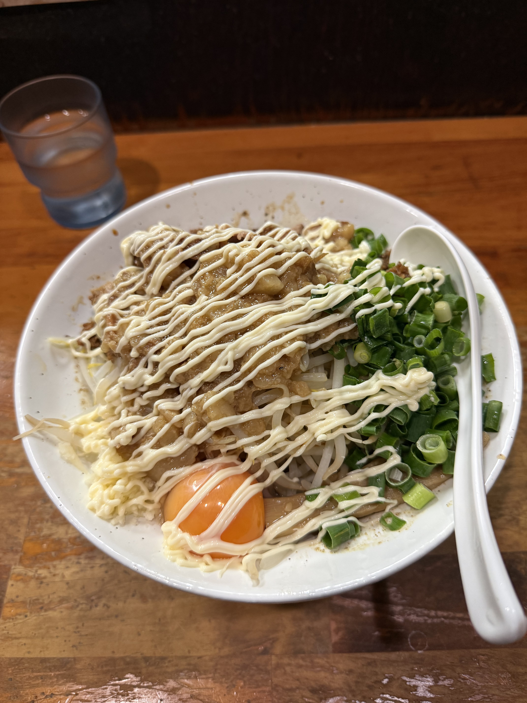

— 02
偏食、
海と出会う
地元・沼津は言わずと知れた海鮮の街だ。港には毎朝新鮮な魚介が並び、地元の人たちは当たり前のようにその恵みを楽しんでいる。でも偏食の僕は、ずっとその輪の外にいた。
転機は、友達に連れ出された沼津港での食事だった。「一口だけでいいから」と差し出されたネタを、半ば強引に口に運んだら——思いのほか、美味しかった。その日以来、海鮮への壁が少しだけ低くなった気がする。
まだ出会えていない美味しいものが、きっとある。挑戦を忘れない。


僕はいわゆる偏食だ。食べられないものが多くて、食事の場では申し訳なさを感じることも少なくない。でも、そんな僕でも唯一テンションが跳ね上がるのが二郎系ラーメンだ。親友と連れ立って通い詰めてきた二郎系の時間は、かけがえない僕の日常になっている。一方で地元の沼津は海鮮が有名で、周りは当然のように海の幸を楽しんでいたが、僕にはずっと縁がなかった。ところが、ある日友達に無理やり勧められた沼津港の魚介が、意外にも口に合った。「あ、いけるじゃん」と思った瞬間の驚きは今でも忘れない。偏食は性格みたいなものだけど、挑戦することは諦めないでいたい。
二郎系ラーメンは、僕にとって聖域だ。スープに沈む山盛りの野菜、背脂が浮かぶ濃厚なブロス、そして規格外の麺量——あの独特の世界観に、いつの間にか完全に魅了されていた。
親友と「今日はどの店にする」と話しながら向かうあの時間も含めて、二郎系は僕の日常に欠かせない存在になっている。量も味も、どこかで「限界を超える」感覚が好きなのかもしれない。
二郎系が好きな人は、ぜひ誘ってください。

地元・沼津は言わずと知れた海鮮の街だ。港には毎朝新鮮な魚介が並び、地元の人たちは当たり前のようにその恵みを楽しんでいる。でも偏食の僕は、ずっとその輪の外にいた。
転機は、友達に連れ出された沼津港での食事だった。「一口だけでいいから」と差し出されたネタを、半ば強引に口に運んだら——思いのほか、美味しかった。その日以来、海鮮への壁が少しだけ低くなった気がする。
まだ出会えていない美味しいものが、きっとある。